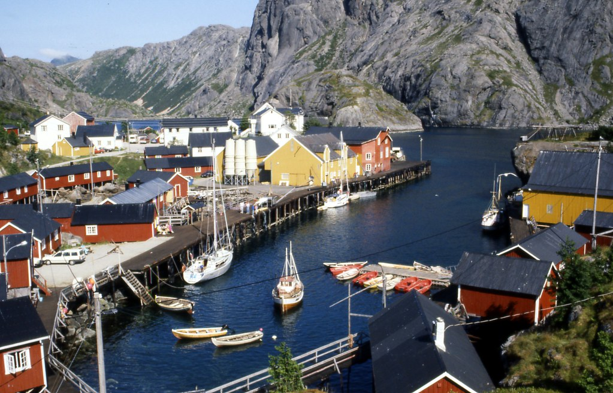
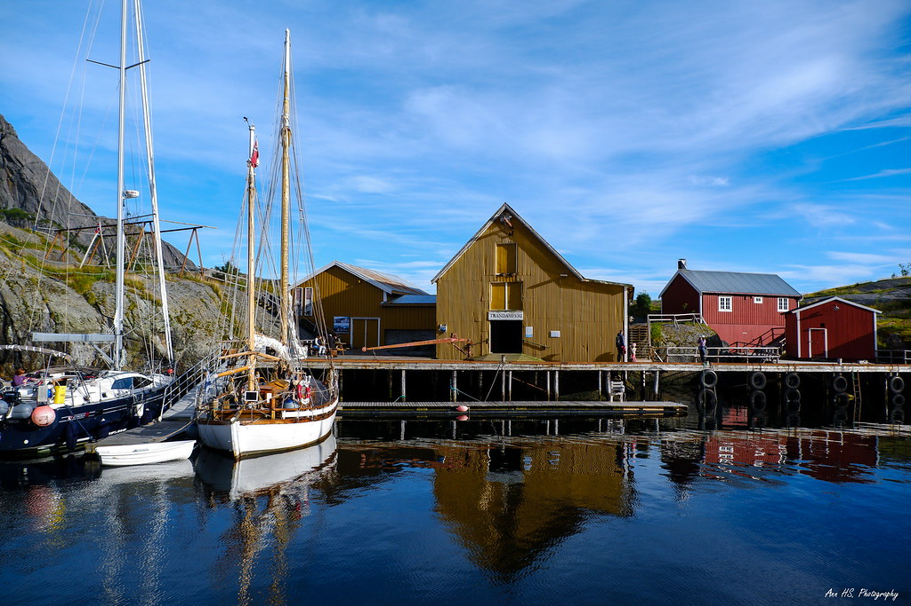

🗺
路順地圖(由東到西沿 E10)
Sakrisøy–Hamnøy–Reine 只差 2–4 km,等於同一「核心生活圈」
| 段落(東→西) | 距離 | 夏季 | 冬季(3月) |
|---|---|---|---|
| Svolvær → Henningsvær | 23 km | 25–30 分 | 35–45 分 |
| Henningsvær → Leknes | 50 km | 45 分 | 60 分 |
| Leknes → Nusfjord(支線 5 km) | 30 km | 30–35 分 | 45 分 |
| Leknes → Ramberg/Flakstad | 28 km | 30 分 | 40 分 |
| Flakstad → Sakrisøy | 25 km | 25 分 | 35 分 |
| Sakrisøy → Hamnøy → Reine | 6 km | 8 分 | 13 分 |
| Reine → Å(公路最末端) | 10 km | 12–15 分 | 20 分 |
| Svolvær → Å 全程 | 約 130 km | 約 2.5h | 約 3.5–4h |
🛬 機場結論核心區務必飛 Leknes(LKN)(到 Reine 約 58 km / 冬季 1–1.5h、機場有租車櫃台);別飛 Svolvær(SVJ)(到 Reine 冬季 3.5–4h、機場無租車櫃台)。
🧭 Google Maps 主線:一鍵串起所有點
🧭 Google Maps 主線:一鍵串起所有點




🏡
建議基地與天數
核心策略:只搬一次家
| 晚 | 住哪 | 涵蓋 | 理由 |
|---|---|---|---|
| 第 1 晚 | Henningsvær | Svolvær 進、Henningsvær | 落地不硬拉車,先睡一晚調時差 |
| 第 2 晚 | Henningsvær / Leknes | 往西沿途 | 緩衝日,白天慢慢往西 |
| 第 3–5 晚 (壓軸) | Reine / Hamnøy / Sakrisøy 擇一 | Sakrisøy、Hamnøy、Reine、Å、交通船 | 定點放射、看極光最佳機位、完全不回頭 |
4 晚 5 天:砍第 2 晚,壓軸仍住 3 晚(不能砍)。6 晚 7 天:壓軸加到 4 晚,多 1 個極光/壞天備援。
選後段基地Hamnøy(Eliassen 紅屋)=景觀第一、最常拍到極光｜Sakrisøy(黃屋)=安靜有停車場、近 Reine 超市｜Reine(Reine Rorbuer)=交通船碼頭旁、設施最完整。
❄ ❄ ❄
📅
逐日行程(5 晚 6 天)
D1
抵達 Svolvær → Henningsvær(調時差)
- 自駕 Svolvær→Henningsvær(23km/冬季約40分),漁村平緩散步
- 室內雨備:Svolvær Magic Ice 冰酒吧;想看海鵰 Trollfjord 大船最順排這天
- 補給:Svolvær 大超市(Coop/Rema 1000)
- 夜:Henningsvær 周邊無光害角度;天差就早睡,命中壓後段
D2
Henningsvær 深度 + 往西過渡
- Henningsvær 慢遊(足球場從橋上/高點看,不下雪坡)
- 補給(全程最強):Leknes(Coop Extra/Rema 1000)+ 加油
- 夜:近 Leknes 可去 Uttakleiv/Haukland 海灘(朝北地平線乾淨)
D3
西進核心區(進駐壓軸基地,一路向西不回頭)
- Leknes →(支線5km)Nusfjord → Ramberg/Skagsanden/Flakstad 教堂 → Sakrisøy(黃屋)→ Hamnøy 橋經典機位 → 入住 Reine 區
- 離開 Leknes 前一定加滿油+採買(Å 沒加油站);Reine 有 COOP Prix、Circle K
- 夜:Skagsanden 沙灘倒影(最推)或 Hamnøy 橋
D4
Reinefjorden 交通船 day trip ⚠️前一天電話訂
- Reine Hurtigbåtkai 搭船到 Vindstad/Kjerkfjorden(單程約20–40分),穿越雪峰夾峙峽灣
- 純搭船賞景:只買來回票、不下船登山、直接坐回程
- 3 月冬季制:電話 +47 994 91 805 前一天訂、不收現場上船、週六常停駛
- 夜:Reine 靜水倒影 + 漁村燈光
D5
Reine ↔ Å 末端漁村 loop(短程壓軸)
- 基地→Å(10km/約20分,公路最末端)→原路回;Å 紅屋群、鱈魚乾架;回程補拍 Hamnøy 橋、Sakrisøy
- 室內雨備:Å 漁村博物館(平日約11–15、週末休)、百年麵包房 Bakeriet i Å
- 夜:Å(光害極低)或 Sakrisøy(黃屋前景)
D6
回程
- Reine → Leknes 機場(LKN,約70km/冬季1.5–2h)還車
🌌 每晚極光通則Reine/Hamnøy/Sakrisøy 本身就是絕佳極光前景,不必開夜車。住面海/朝北小屋 → 設 yr.no 雲量警報 + Hello Aurora 社群回報 → 每 1–2 小時看天 → 放晴+有活動就出門到屋外或走到 Hamnøy 橋。
❄ ❄ ❄
🛖
小屋住宿(rorbuer)
務必選面海房;冬季常有「最少住 2 晚」
| 住宿(漁村) | 特色 | 3月 | 參考價/晚(2人) | 官方訂房 |
|---|---|---|---|---|
| Eliassen Rorbuer(Hamnøy)★紅屋 | 明信片紅屋立海上、最常拍到極光 | 全年 | 面海約 3,290 NOK(約 1.09 萬) | booking.rorbuer.no +47 4581 4845 |
| Sakrisøy Rorbuer(Sakrisøy)★黃屋 | 全島唯一赭黃小屋、正對 Olstind | 開 | 約 1,800–2,800 NOK | sakrisoyrorbuer.no |
| Reinefjorden Sjøhus(Hamnøy) | 玻璃屋、天窗躺床看極光、桑拿 | 冬季開(先確認) | 雙人約 €176 起(約 6,300) | booking.reinefjord.no +47 907 25 683 |
| Reine Rorbuer(Reine) | 鄰交通船碼頭、設施最齊、有餐廳 | 2–10 月開 | 1,500 起;面海 2,500–3,500+ | booking.reinerorbuer.no +47 76 09 22 22 |
| Å Rorbuer(Å) | 公路最末端、需指定 sea view、有餐廳 | 2–10 月開 | 約 €170 起(約 6,000) | booking.arorbuer.no |
| Tind seaside cabins(Tind) | 最寧靜末端、面海+山景、情侶評 9.0 | 先 email 確認 | 約 1,450–2,050 NOK | Booking.com |
⏰ 最該最早訂(2026 年 6–9 月一開放就訂面海房)① Eliassen 面海紅屋(建議 9–12 個月前)② Sakrisøy 黃色面海(6–12 個月前)③ Reine Rorbuer Deluxe Waterfront。
🛏 3 種住宿組合(壓軸 3 晚雙人)A 經濟(3 晚約 1.6–2 萬):Tind / Å 標準 / Sakrisøy 小房,自炊省餐費。
B 浪漫 ⭐最推(3 晚約 2.7–3.3 萬):Eliassen 面海紅屋 / Sakrisøy 面海黃屋,踏出門就是紅黃面海木屋+雪峰倒影。
C 升級(3 晚約 1.9–3.4 萬):Reinefjorden Sjøhus 天窗追極光 / Reine Deluxe Waterfront。
B 浪漫 ⭐最推(3 晚約 2.7–3.3 萬):Eliassen 面海紅屋 / Sakrisøy 面海黃屋,踏出門就是紅黃面海木屋+雪峰倒影。
C 升級(3 晚約 1.9–3.4 萬):Reinefjorden Sjøhus 天窗追極光 / Reine Deluxe Waterfront。
⛴
Reinefjorden 交通船
純搭船賞峽灣,不走 Bunes 雪坡
- 航線:Reine ↔ Kjerkfjorden / Rostad / Vindstad,自 Reine Hurtigbåtkai(Ytre Havn 大停車場旁)出發,單程約 20–31 分,穿越被陡峭雪峰夾峙的 Reinefjorden。
- 純搭船賞景可行:只買來回票、不下船登山、直接坐回程(符合不走雪坡);訂位時確認去回銜接,避免在對岸久候。
- 票價(2025 官方):來回成人約 94 NOK(約 310 TWD);兒童/學生約 48 NOK。
⚠ 3 月務必看冬季(約第 1–11 週,1/1–3/16)採預訂制:必須前一天電話預訂、不接受現場上船、週六常停駛,每日僅 2–3 班。3 月底接近換季可能調整,務必致電確認當年度時刻。
📞 冬季預訂 +47 994 91 805 · 時刻查詢 reisnordland.com/ferry · 客服 +47 910 09 600
📞 冬季預訂 +47 994 91 805 · 時刻查詢 reisnordland.com/ferry · 客服 +47 910 09 600
❄ ❄ ❄
📸
景點清單(標注冬季可行性)
🎣 漁村
Nusfjord(UNESCO 古漁村,入村費約 100 NOK,平路)·Sakrisøy(黃屋經典機位)·Hamnøy(紅屋橋邊就拍到,免健行)·Reine(靜水倒影,店約 11:00 開)·Å(公路盡頭,室內雨備佳)·Tind(人少安靜)。
🏖 海灘 / 觀景(冬季步道難度)
| 地點 | 3 月 | 說明 |
|---|---|---|
| Skagsanden(Flakstad) | ✅ 極推 | 極光名灘,停車場旁即沙灘,平路 |
| Ramberg / Fredvang 雙橋 | ✅ | 平緩沙灘 / 開車即拍,免健行 |
| Uttakleiv / Haukland | ✅ | 停車場旁即達;聯外路冬季結冰需雪胎 |
| Kvalvika(Fredvang) | ⚠️ 放棄/遠觀 | 3 月需雪鞋/冰爪,不符零風險 |
| Reinebringen | ❌ 排除 | 陡階+雪簷+雪崩,11月底–3月底致命危險,官方勸阻 |
🌌 極光點(西段朝北、3 月可達免危險健行)Skagsanden(最推)、Reine 靜水、Hamnøy 橋、Å、Sakrisøy、Uttakleiv/Haukland。
🍽 冬季營業餐廳(常縮時/季節休)Anitas Seafood(Sakrisøy,冬季約 12–16)、Gammelbua(Reine,建議訂位)、Krambua(Reine 咖啡)、Brygga(Å)。⚠️ Gadus(Hamnøy)2026/3 查為暫時關閉。建議訂附廚房 rorbuer 自炊 + Leknes 超市採買最保險。
🦅 海鵰遊船(Svolvær 出發,3 月運行):Trollfjord 大船+海鵰(約 950–1,090 NOK、含魚湯、平穩保暖推薦)或 RIB 快艇(約 1,095 NOK、離鷹近但冷濕)。最順排在進出 Svolvær 那天(Day 1),別從 Reine 專程回頭。
🚗
極光攻略 · 冬季自駕安全 · 打包
🌌 極光(3 月)
- 3 月是 Lofoten 極光優良月份;真正變數是「會不會放晴」(看雲不看 KP)。建議排上半月至中旬。
- 3 月日照:月初約 07:24–17:13、月中約 06:25–18:06、月底 13h+;約 19:30 後夠暗。
- App:yr.no(最重要)+ Hello Aurora + My Aurora Forecast。
❄ 冬季自駕安全
- 租 4WD/AWD + 全險 + 釘胎(訂車白紙黑字確認 winter/studded tyres included)。
- 黑冰是 3 月最大殺手(由冷轉暖下雨最危險,挪威不灑鹽);Reine–Hamnøy 單線橋紅綠燈、橋面結冰起步小心。
- 盡量白天行車、夜間定點守極光。 每天出門必查 yr.no(天氣)+ 175.no(路況/攝影機)+ varsom.no(雪崩)。
- 停車:村內多付費(卡/Vipps),住宿 rorbuer 多附免費停車。
🎒 打包重點
防風防水外層+雪褲保暖中層發熱內層厚手套/毛帽/圍脖防滑雪靴+冰爪暖暖包相機腳架備用電池(貼身)紅光頭燈車上刮冰器/毛毯/行動電源
💰
該段每人預算(2 人 6 天,僅西 Lofoten 段)
| 項目 | 每人(TWD) |
|---|---|
| 住宿(過渡 2 晚 + 壓軸 3 晚,浪漫組合) | 18,800–23,100 |
| 租車含釘胎 6 天 | 8,300–11,600 |
| 油費 | 1,700–2,500 |
| Reinefjorden 交通船來回 | 約 320 |
| 自炊 + 偶爾外食 | 5,800–8,300 |
| 合計(不含機票) | 每人約 3.5–4.6 萬 |
機票 Bodø↔Leknes(Widerøe)另計,單程常見約 2,000–5,000 TWD/人,提早訂較便宜。
❄ ❄ ❄
🔗
官方連結與電話速查
- ✈️ Widerøe(Leknes 航線):wideroe.no
- ⛴ Reinefjorden 交通船:reisnordland.com/ferry｜冬季預訂 +47 994 91 805｜客服 +47 910 09 600
- 🌦 氣象+極光:yr.no｜路況/攝影機:175.no｜雪崩:varsom.no
- 🛖 小屋:Eliassen｜Sakrisøy｜Reinefjorden Sjøhus｜Reine Rorbuer｜Å Rorbuer
- 📸 景點:Nusfjord｜Magic Ice｜Trollfjord 海鵰
⚠ 最重要的誠實提醒交通船 3 月採電話預訂制且時刻每年微調、巴士冬季大減班、博物館/餐廳冬季常縮時或休、價格為 2025 推估 ── 全部請在 2026 年底至出發前 1 個月,用上述官方連結與電話逐項重新確認 2027 當年度資訊。